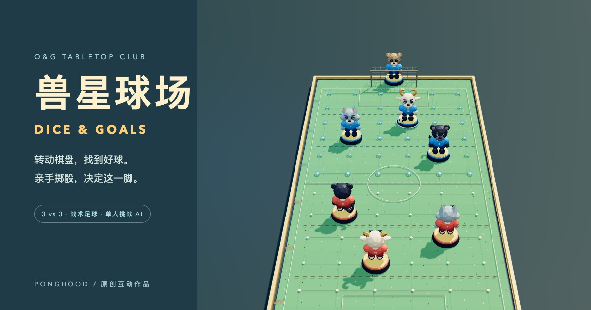

每队三位球员与固定门将。用每回合 3 点行动力，安排走位、传球、抢断与射门。
Q&G TABLETOP CLUB 单人 vs AI
兽星球场DICE & GOALS
三位兽星，一块球场。
转动棋盘，找到好球。
亲手掷骰，决定这一脚。
无需注册 · 进度保存在本机
支持 WebGL 2 的浏览器可玩；手机默认轻量画质。

按住蓄力，松开投骰。看清点数和双方算式，确认后结算；防守对手时也由你操作。
自由旋转、缩放与俯视。狼的重炮、山羊的直塞、黑豹的突破，各有两次施展机会。
三步开踢
- 使用默认阵型，或先调整蓝方三名球员的站位。
- 掷出开球骰，确认结果，开始与 AI 的较量。
- 点击球员与行动按钮，按提示选点、投骰或确认。
关于这次试玩
完整比赛共十二轮。无需付费接口或在线 AI；游戏在你的浏览器中运行。刷新可恢复本机对局，但清理网站数据或更换设备不会保留进度。
游戏仍在调平阶段。投掷力度只改变动画，不改变概率。如果画面不流畅，可在场内切换轻量画质；不支持 WebGL 的设备仍可阅读本页。